비쥬얼영역
-
MAGAZINE F ISSUE NO.22
Olive
수천 년이 넘는 재배 역사를 이어오며 인류 식문화에 깊은 영향을 끼쳐온 올리브는
SHOP NOW
완전무결한 식물성 지방이자 고품질 에너지의 근원, 그리고 풍요와 평화의 상징으로 그 존재감을 발휘합니다.1 3 -
‹Jobs - Comedian>
무대 아래에선 코미디를 구성하는 작가이자 프로듀서로, 무대 위에서는 거침없는 표현력을 뽐내는 올라운드 플레이어로.
SHOP NOW
매거진 ‹B>의 단행본 '잡스'의 다섯 번째 직업은 웃음을 창조하고 발명하는 코미디언입니다.2 3 -
MAGAZINE B ISSUE NO.16
Aesop 2nd Edition
매거진 ‹B>의 열여섯 번째 이슈로 소개했던 '이솝'이 2022년 개정판으로 돌아왔습니다.
SHOP NOW
9년 만의 세컨드 에디션 발행을 통해 첫 에디션에서 담지 못한 창립 멤버와의 인터뷰,
본사 오피스, 스토어 기획과 제작에 담긴 스토리를 중심으로 이솝의 보다 더 확장된 브랜드 스토리를 담았습니다.3 3
Shop
Magazine B, Magazine F,
Fashion, Hospitality
-
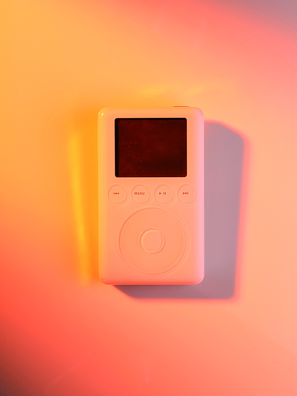
MAGAZINE B ISSUE NO.55
APPLE MUSIC
2015년 6월 시작한 애플의 음원 스트리밍 서비스 애플뮤직은 내부 에디터가 직접 큐레이팅한 플레이리스트와 음악 신의 유명 DJ를 내세운 라디오 스테이션을 통해 음악이 범람하는 디지털 시대에 양질의 음악을 접할 수 있는 플랫폼으로 기능하고 있습니다. 또한 독점 스트리밍 계약, 뮤직비디오 제작 투자 등 아티스트와의 유기적 관계를 강화하는 전략으로 상호 간 시너지를 극대화하며 음악 산업의 지평을 넓히고 있습니다.
-
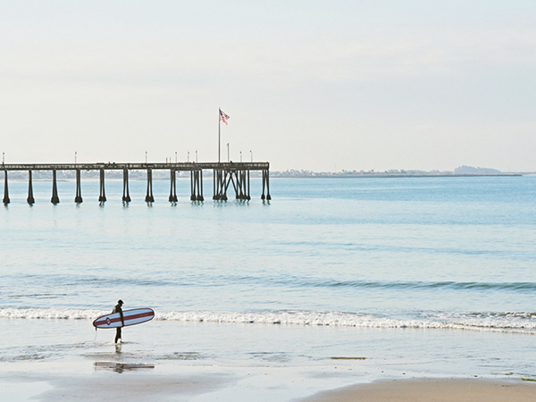
MAGAZINE B ISSUE NO.38
PATAGONIA
이본 쉬나드는 1964년 암벽등반 시 암벽을 해치지 않는 금속 못(피톤)을 제작하다, 1973년 친환경 아웃도어 의류 브랜드 파타고니아를 설립하게 됩니다. 최고의 품질을 고집하면서도 친환경 소재 개발에 매진하고 매년 매출의 1%를 사회 공헌 활동에 사용하는 등 지속 가능한 사회와 환경을 만드는 데 일조하는 파타고니아는 ‘기업의 존재 이유’를 새롭게 정의하며 관련 업계는 물론 더 나아가 사회로까지 그 영향력을 전파하고 있습니다.
-
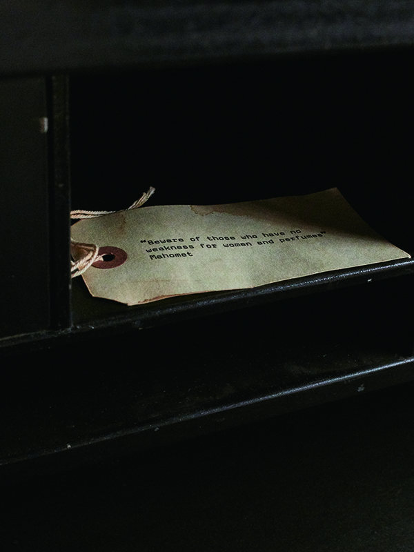
MAGAZINE B ISSUE NO.65
LE LABO
2006년 프랑스 출신의 두 창립자 에디 로시와 파브리스 페노가 뉴욕 놀리타에서 시작한 르 라보는 ‘실험실’이라는 단어를 그대로 따온 이름처럼 조향사의 연구실에서 일어나는 다양한 일에서 영감을 얻어 만든 컬트 향수 브랜드입니다. 원재료에 대한 존중을 기반으로 ‘상탈33’, ‘로즈 31’과 같이 독자적 매력을 지닌 향 제품을 선보이는가 하면, 매장에서 직접 향수를 블랜딩해 병입하는 과정을 진행하거나 제품 라벨에 제조 날짜와 장소, 고객의 이름이나 원하는 메시지를 적을 수 있도록 하는 등 향수를 둘런싼 경험에 주목해 고유한 존재감을 드러내고 있습니다.
Shop
Magazine F, Magazine F,
Fashion, Hospitality
-
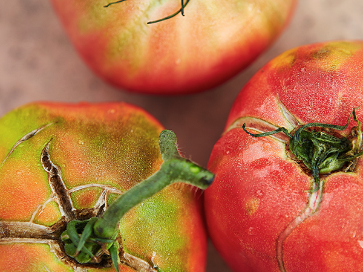
MAGAZINE F ISSUE NO.04
TOMATO
남아메리카가 원산지인 토마토는 양파, 오이, 양배추 등과 함께 세계에서 가장 많이 생산되는 채소입니다. 전 세계에 약 2만5천여 종의 토마토가 유통되며, 그 종류만큼이나 다양한 방식으로 여러 요리에 응용됩니다. 특히 스페인과 이탈리아 등지에서 특유의 성질과 감칠맛을 극대화한 식문화를 꽃피웠으며 피자나 파스타, 가스파초 등의 지중해식 요리에서 토마토는 기원이자 본질이며 상징으로 기능합니다. 더불어 케첩과 같은 가공식품으로도 널리 활용, 대중적 지위와 소비 규모를 갖추며 미래 식문화 흐름을 주도할 식재료로 주목받고 있습니다.
-
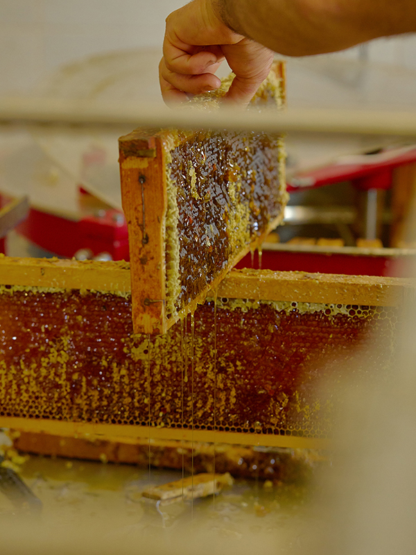
MAGAZINE F ISSUE NO.8
HONEY
꿀은 단맛을 내기 위해 인류가 오랜 시간 동안 사용한 감미료입니다. 꿀벌이 식물에서 채집한 꽃꿀을 각종 효소와 화학 작용을 통해 포도당과 과당으로 분해하는 과정에서 발생하며, 꽃의 종류나 식물이 자란 환경에 따라 마치 와인처럼 각기 다른 풍미를 내는 덕분에 주로 디저트나 칵테일의 원료로 활용됩니다. 또한 일종의 매개자로 농작물의 번식을 돕는 벌의 수분 활동은 식물 자원의 보존, 즉 생태계의 순환에 직접적 영향을 미치고 있음이 증명된 바 있으며, 아보카도와 아몬드, 오이, 사과 등이 벌의 생존과 연관된 대표 작물로 꼽힙니다. 이와 같은 문제의식은 도시 양봉의 대중화로 이어지며 지역 먹거리와 환경 보호에 대한 새로운 담론을 형성하고 있습니다.
Shop
Fashion, Magazine F,
Fashion, Hospitality
-
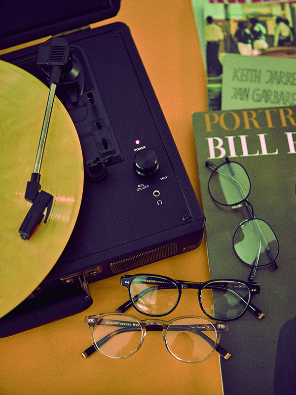
FASHIONISSUE NO.64
MOSCOT
앤디 워홀과 트루먼 커포티, 조니 뎁이 즐겨 쓴 안경으로 유명한 모스콧의 역사는 1915년 뉴욕 로어 이스트사이드에서 시작합니다. 미국의 경제 대공황 시절 단종된 과거의 안경을 복각하며 성장 기틀을 마련해 100년 넘게 역사를 이어 온 모스콧은 흰색 면 티셔츠, 청바지, 윙팁 구두와 같은 아메리칸 클래식의 기본 아이템이자 가장 상징적인 빈티지 아이웨어 브랜드로 세대를 초월해 사랑받고 있습니다.
-
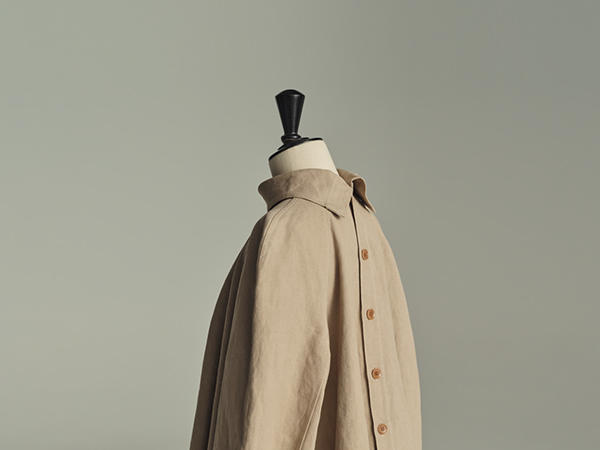
FASHIONISSUE NO.90
LEMAIRE
1991년 프랑스 파리에서 디자이너 크리스토프 르메르가 설립한 패션 브랜드 르메르는 ‘시대를 초월한 일상복’을 표방하는 컬렉션을 선보이면서 두터운 마니아층을 형성해왔습니다. 다양한 피부색을 고려해 주로 톤 다운된 차분한 색감을 활용하고, 실용적이면서 미학적 개성이 담긴 독특한 소재를 개발하는 데 집중해온 르메르 특유의 디자인 문법은 드라이 실크 소재의 셔츠나 비대칭 단추 디테일을 적용한 트위스티드 드레스 등의 에센셜 아이템에서 살펴볼 수 있습니다. 2010년 사라-린 트란이 합류해 현재의 공동 크리에이티브 디렉터 체제를 갖추면서 브랜드는 제2의 전환기를 맞이했고, 주얼리·가죽 소재 가방·슈즈 라인의 확장과 유니클로 협업 컬렉션을 통해 장르와 젠더를 초월해 다양한 세대에게 사랑받고 있습니다.
Shop
Hospitality, Magazine F,
Fashion, Hospitality
-
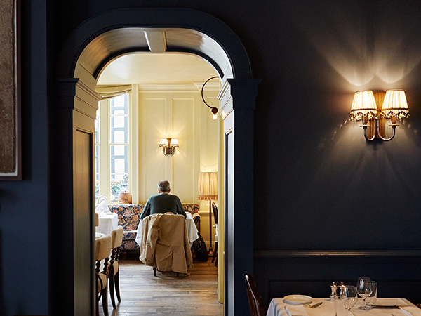
HOSPITALITYISSUE NO.81
SOHO HOUSE
소호 하우스는 권력과 부를 중심으로 모인 남성 위주의 멤버십 클럽과 달리 영화나 음악 산업 등에 종사하는 창의적인 사람들을 대상으로 1995년 런던에서 닉 존스가 설립한 진취적 성격의 멤버십 클럽입니다. 창립자 닉 존스는 ‘마치 내 집처럼 편안한 곳’에서 비슷한 취향을 지닌 사람들과 함께 온종일 마시고 먹고 즐기는 생활을 바랐고, 이러한 정신은 곧 소호 하우스를 상징하는 콘셉트로 자리 잡았습니다. 멤버십 클럽으로는 이례적으로 유럽 전역과 미국, 아시아 등에 27개의 클럽 하우스를 운영함과 동시에 스파, 홈 컬렉션, 레스토랑 등의 브랜드를 전개하며 소호 하우스식 라이프스타일을 제안하고 있습니다.
-
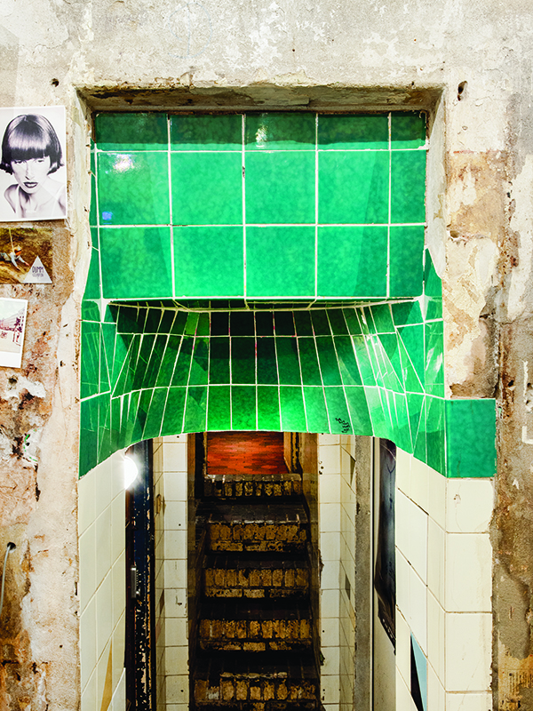
HOSPITALITYISSUE NO.43
BERLIN
냉전 시대가 끝나고 동과 서를 나누는 장벽이 허물어진 것처럼 베를린은 경계와 편견을 허문 도시로 대변됩니다. 상업과 예술의 경계, 하이 컬처와 로 컬처의 경계, 전통과 현대의 경계를 아슬아슬하게 오가며 모든 종류의 사람과 문화를 받아들입니다. 터키식 스트리트 푸드와 갱스터 출신 셰프의 파인다이닝 레스토랑, 벙커 안의 미술관과 공원으로 변모한 공항은 다양함이 공존하는 베를린의 단면을 그대로 드러내고 있습니다.

Magazine F ISSUE NO.20
TOOLS
조리 도구는 식문화는 물론 인테리어와 디자인, 테크, 삶의 양식 전반의 변화를 담고 있는 주방의 바로미터라 할 수 있습니다.
SHOP NOWBooks
Jobs , The Series, Others
-
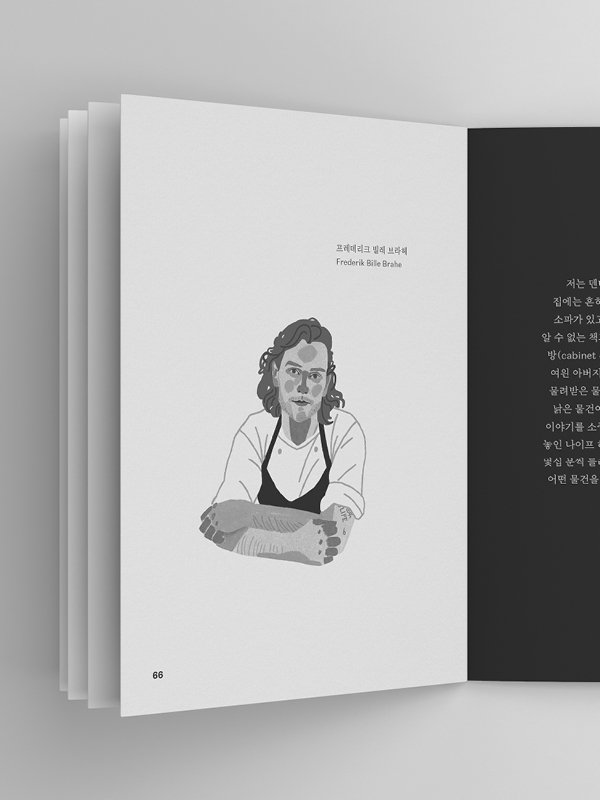
JOBS
JOBS - CHEF
≪잡스 - 셰프: 맛의 세계에서 매일을 보내는 사람≫에서는 '맛'을 다루는 여러 직업인을 다루고 있습니다. '위대한 셰프', '셰프의 셰프'로 불리는 댄 바버, 넷플릭스 ‹셰프의 테이블>을 통해 사찰 음식을 전 세계에 알린 정관 스님, 서울의 파인 다이닝 씬에서 출발해 뉴욕으로 무대를 넓힌 박정현, 미식의 도시 코펜하겐에 신선한 변화를 불러온 프레데리크 빌레 브라헤, 월가의 금융인으로 커리어를 시작해 요리의 길로 방향을 바꾼 이선용, '입말(구어)'로 전해지는 제철 음식을 모으는 요리 연구가 하미현을 인터뷰했고, 글 쓰는 요리사 박찬일의 에세이를 담았습니다. 전통적 관점의 셰프부터 고유의 영역을 개척 중인 요리 연구가까지 국적과 배경을 넘나드는 이들의 이야기를 듣다 보면, 이 직업 세계의 속성과 변화를 관찰할 수 있습니다. '잡스(JOBS)'는 브랜드 이야기의 확장판입니다. 매력적인 브랜드에는 자신만의 직업의식을 지닌 매력적인 사람이 있고, 일에 대한 태도와 가치는 곧 브랜드의 철학과 정신으로 자연스레 연결됩니다. 사람을 중심으로 일과 삶의 이야기를 담아낼 '잡스'는 각자만의 방식으로 브랜드를 만드는 데 기여하는 이 시대의 직업인과 나눈 가장 생생한 대화를 인터뷰집 형식으로 전달합니다.
-
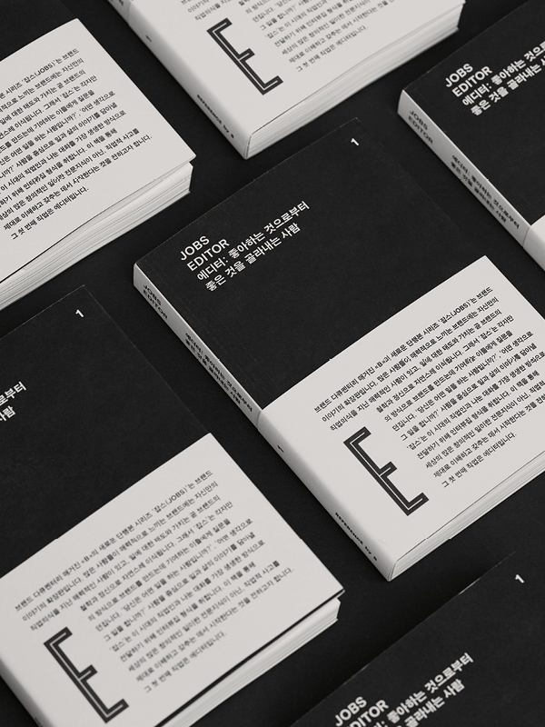
JOBS
JOBS - EDITOR
≪잡스 - 에디터: 좋아하는 것으로부터 좋은 것을 골라내는 사람≫에서는 다양한 이력과 산업에서 활동 중인 다섯 명의 에디터를 만났습니다. 신문과 잡지 등 전통 미디어에서 일한 경험을 바탕으로 이커머스와 테크 영역으로 진출한 영국의 스타 저널리스트 ‘제러미 랭미드’, 비즈니스 뉴스 플랫폼 뉴스픽스의 최고 콘텐츠 책임자이자 경영자인 ‘사사키노리히코’, 로컬 숍 연구 잡지 ‹브로드컬리> 발행과 디자인을 겸하는 조퇴계-이지현, 워크룸 프레스의 편집자로 일하고 있는 김뉘연, ‹브루터스> 편집장으로 일하면서 ‹까사 브루터스>의 창간에 참여한 니시다 젠타까지. 에디터라는 직업은 같으면서도 다르지만, 늘 새로운 시도를 쫓고 도전하는 직업이라는 점에서 공통점을 발견합니다. '잡스(JOBS)'는 브랜드 이야기의 확장판입니다. 매력적인 브랜드에는 자신만의 직업의식을 지닌 매력적인 사람이 있고, 일에 대한 태도와 가치는 곧 브랜드의 철학과 정신으로 자연스레 연결됩니다. 사람을 중심으로 일과 삶의 이야기를 담아낼 '잡스'는 각자만의 방식으로 브랜드를 만드는 데 기여하는 이 시대의 직업인과 나눈 가장 생생한 대화를 인터뷰집 형식으로 전달합니다.
-
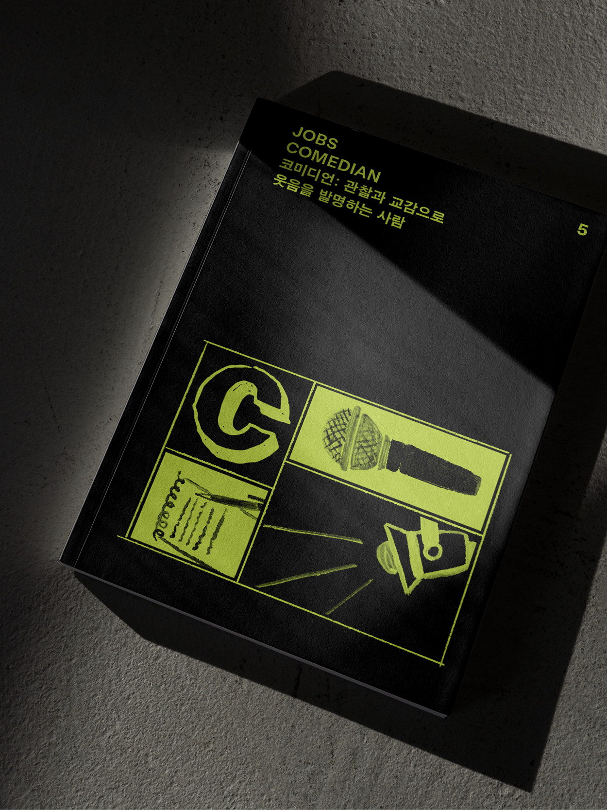
JOBS
JOBS - COMEDIAN
≪잡스 - 코미디언: 관찰과 교감으로 웃음을 발명하는 사람≫에서는 '이 시대 코미디언은 어떤 모습으로 활동하고 있을까?'라는 물음을 가지고, 총 여섯 명의 국내외 코미디언과 한 명의 PD와 만나봅니다. 공개 코미디, 예능, 스탠드업 코미디 등 분야를 가리지 않고 도전을 거듭하는 박나래, 공채 개그맨으로 데뷔했지만, 유튜브에서 스케치 코미디 채널을 만들어 독보적인 영역을 개척한 숏박스, 23년간 다양한 영역에서 활동해온 코미디언이자 미국 활동에 도전장을 내민 김영철과 이야기를 나누었고, 팟캐스트 ‹필링 아시안>의 진행자이자 SNS 인플루언서로 활동하는 뉴욕 출신 스탠드업 코미디언 영미 메이어, 요시모토 흥업 산하의 예능인 양성 학원 NSC 출신 올라운더 유리양 레트리버, 미디어 업계에서 쌓은 커리어를 틀어 코미디언이자 프로듀서, 창업자로 활약하는 카림 라마를 인터뷰했습니다. 그리고 ‹런닝맨>, ‹범인은 바로 너!>, ‹셀럽은 회의 중> 등 코미디 쇼 및 예능 프로그램을 연출해온 김주형 프로듀서가 관찰한 '코미디언'의 이야기를 에세이로 담았습니다. '잡스(JOBS)'는 브랜드 이야기의 확장판입니다. 매력적인 브랜드에는 자신만의 직업의식을 지닌 매력적인 사람이 있고, 일에 대한 태도와 가치는 곧 브랜드의 철학과 정신으로 자연스레 연결됩니다. 사람을 중심으로 일과 삶의 이야기를 담아낼 '잡스'는 각자만의 방식으로 브랜드를 만드는 데 기여하는 이 시대의 직업인과 나눈 가장 생생한 대화를 인터뷰집 형식으로 전달합니다.
Books
The Series , The Series, Others
-
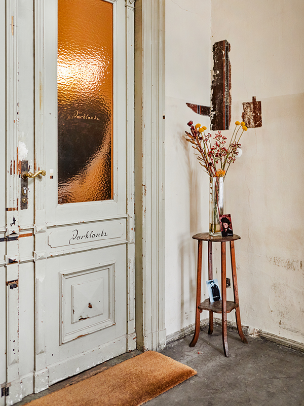
THE SERIES
THE SHOP
'THE SHOP (더 숍)'은 서울과 도쿄, 런던과 LA 등의 도시에서 각자 다른 창의적인 방식으로, 사람들에게 발견과 경험의 재미를 주는 여러 숍을 소개합니다. 물건을 판매하는 매장이면서 레스토랑, 전시장을 겸하는 하이브리드 형태의 숍, 건강하고 행복한 삶에 대한 가치와 메시지를 전달하는 숍, 오너 개인의 취향과 기호로 자신의 은밀한 공간을 공개하는 듯한 숍, 자신이 살고 있는 지역의 오리지널리티를 탐구하는 숍까지, 크게 5개의 특징으로 묶어낸 숍들은 각자 다양한 면모들을 보이고 있습니다.
-
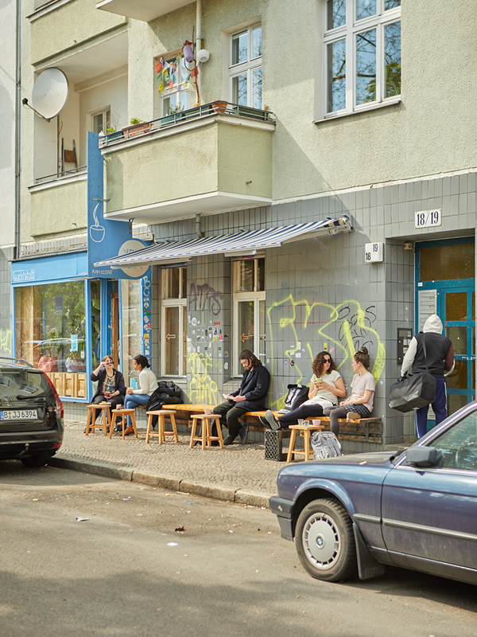
THE SERIES
THE NEIGHBORHOOD
“어떤 동네에서 살고 싶은가요?” '더 네이버후드'는 '더홈' '더숍'에 이어 삶의 지향점으로서의 동네에 대해 다루는 책입니다. 현대사회에서 동네란 또 다른 ‘집’으로 기능하며, 우리는 끊임없이 이상향의 동네를 그려보곤 합니다. 베를린의 쾨르네르키츠, 파리의 샤론, 서울의 서촌, 뉴욕의 그리니치빌리지, 런던의 햄스테드, L.A.의 베니스까지. ‹더 네이버후드>에서 소개하는 6개의 이상적인 동네가 어떤 공통점과 어떤 차별점을 가지고 있는지 동네를 지킨 토박이들, 그리고 거주인과 숍 오너들을 만나 살폈습니다.
Books
Others , The Series, Others
Friday,
30 Sep
2022
-
B PLAYLIST
Urban Travel - Curated by Montblanc
몽블랑 팀에서 보내온 여행 테마의 'Urban Travel' 플레이리스트
-
B CAST
[Chapter 83] JOBS - NOVELIST
소설 ‹창문 넘어 도망친 100세 노인>의 저자 요나스 요나손 인터뷰 낭독
-
NEWSLETTER
How to make a better life with clothes
일곱 번째 이슈를 발간한 ‹라이프웨어 매거진>과 이를 기념해 한국을 방문한 기노시타 다카하로의 이야기. 30년 경력의 베테랑 편집자가 말하는 좋은 잡지를 만드는 방법.
-
NEWSLETTER
God gave man olives as a gift
먹거리 이상의 의미이자 문화의 근간을 이루는 식재료 '올리브'. 올리브를 테마로 한 여행부터, 올리브 예찬론자의 이야기까지.
-
NEWSLETTER
Explore the brand’s route
자연에서 영감을 받은 '오아시스 타워'부터 자신과 가족의 지분을 모두 기부한 파타고니아 창립자 이본 쉬나드의 이야기까지.
-
B CAST
[Chapter 26] STARWARS (part 2)
매거진 B 조수용 발행인과 신기주 에스콰이어 편집장이 이야기하는 스타워즈의 상품성과 디즈니 인수 이후의 미래